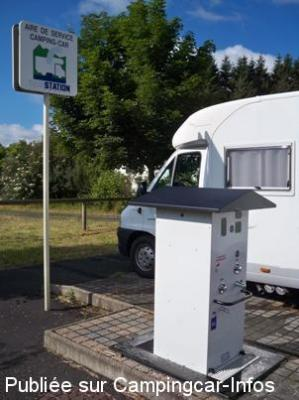
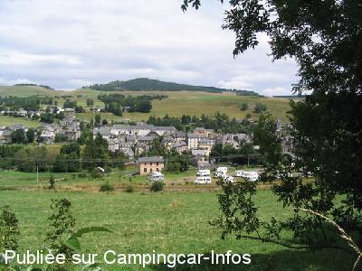
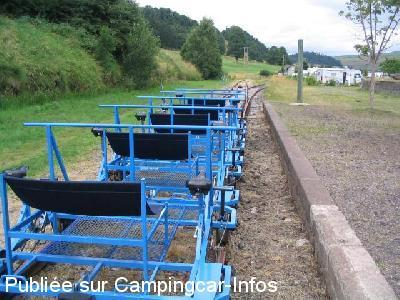

ASN = Aire de services avec stationnement nuit possible de :
ALLANCHE
(N° 127)
Accès/adresse :
Chemin de la Roche Marchal
Parking de la gare
15160 ALLANCHE
Parking de la gare
15160 ALLANCHE
Latitude : (Nord) 45.22902° Décimaux ou 45° 13′ 44′′
Longitude : (Est) 2.9319° Décimaux ou 2° 55′ 54′′
Tarif : Gratuit
Type de borne : RACLET
Services :


Poubelles tri sélectif
Commerces
Vélo-Rail
Autres informations :
Ouvert de mai à novembre
25 emplacements
Tel : +33(0)471 204 843

Le 18/07/2012 par badboy41

Le 22/08/2008 par tvdc59

Le 22/08/2008 par tvdc59
de
yvesvoyage
le 27/09/2015 :
Nous avons passé la nuit du du 16 au 17 septembre 2015, et oui bercé par les cloches des salers, je vous rassure la nuit c'est super calme le village mérite une visite.
Nous avons passé la nuit du du 16 au 17 septembre 2015, et oui bercé par les cloches des salers, je vous rassure la nuit c'est super calme le village mérite une visite.
de
GT
le 09/09/2015 :
super petit coin au calme, le soir il faut observer les biches aux alentours, dans le pré d a coté, il y avait une douzaine de salers qui nous ont bercer du soir au matin avec leurs cloches , et aussi le coq du voisin, pour moi un vrai régal, c est un retour a la vrai nature, et en plus des gens super sympa
super petit coin au calme, le soir il faut observer les biches aux alentours, dans le pré d a coté, il y avait une douzaine de salers qui nous ont bercer du soir au matin avec leurs cloches , et aussi le coq du voisin, pour moi un vrai régal, c est un retour a la vrai nature, et en plus des gens super sympa
de
Armend1942
le 10/09/2014 :
Que pourrait-on ajouter à tous ces éloges tout est dit y compris la qualité de l'accueil. Cerise sur le gâteau, l'Office de tourisme siège sur place. Nous y retournerons avec plaisir. Merci aux élus qui ont tout compris.
Que pourrait-on ajouter à tous ces éloges tout est dit y compris la qualité de l'accueil. Cerise sur le gâteau, l'Office de tourisme siège sur place. Nous y retournerons avec plaisir. Merci aux élus qui ont tout compris.
de
François 63
le 21/07/2014 :
Aire très agréable (dommage que certains camping-caristes s'y installent à demeure pour leur vacances!!!)
Aire très agréable (dommage que certains camping-caristes s'y installent à demeure pour leur vacances!!!)
de
Alex
le 06/07/2014 :
22/06/2014
Aire très agréable avec confirmation des commentaires favorables calme . J'ajoute des commerçants attentifs en particuliers la station service ELAN qui m'a apporté son concours un samedi pour le dépannage de mon brûleur de frigo et qui souhaitait le faire gratuitement , si ça existe encore des commençants de ce genre !
22/06/2014
Aire très agréable avec confirmation des commentaires favorables calme . J'ajoute des commerçants attentifs en particuliers la station service ELAN qui m'a apporté son concours un samedi pour le dépannage de mon brûleur de frigo et qui souhaitait le faire gratuitement , si ça existe encore des commençants de ce genre !
de
boutdebois
le 05/06/2013 :
vous recherché le calme,les balades,et bien voue étes servis.
très belle aire ,a part le sol et le chemin qui demande un entretien plus confortable .
centre du village a 300m avec tous les commerces et services .
merci a la municipalité pour notre séjour.
vous recherché le calme,les balades,et bien voue étes servis.
très belle aire ,a part le sol et le chemin qui demande un entretien plus confortable .
centre du village a 300m avec tous les commerces et services .
merci a la municipalité pour notre séjour.
de
bidou1734
le 25/08/2012 :
On ne peut que confirmer tous les compliments justifiés écrits par mes prédécesseurs.
Un grand merci à la commune
On ne peut que confirmer tous les compliments justifiés écrits par mes prédécesseurs.
Un grand merci à la commune
de
Patrick 72
le 22/08/2012 :
une aire comme on les aime. Calme bien située. Vélorail et office du tourisme du Cézallier sur place. Ambiance très champêtre et reposante. Super!
une aire comme on les aime. Calme bien située. Vélorail et office du tourisme du Cézallier sur place. Ambiance très champêtre et reposante. Super!
de
A Daniel
le 18/07/2012 :
§Week end du 14Juillet 2012 a Allanche
la borne a été remplacée par une Sanistation ( voir photo ).
Toujours très calme et a deux pas des commerces.
§Week end du 14Juillet 2012 a Allanche
la borne a été remplacée par une Sanistation ( voir photo ).
Toujours très calme et a deux pas des commerces.
de
Christiane73
le 24/06/2011 :
Une belle aire, un accueil sympa à l'office du tourisme. Nous nous propsons de revenir pour la fête de l'estive, l'année prochaine!!!
Une belle aire, un accueil sympa à l'office du tourisme. Nous nous propsons de revenir pour la fête de l'estive, l'année prochaine!!!
de
LAURENT
le 03/08/2010 :
Sommes passés pour la brocante, toujours aussi bien accueillis et la personne du syndicat d'initiatives, situé dans la gare, est très gentille.
Sommes passés pour la brocante, toujours aussi bien accueillis et la personne du syndicat d'initiatives, situé dans la gare, est très gentille.
de
ivan
le 26/05/2009 :
Super ! Nous avons passé 4 jours pendant la fête de l'estive
Super ! Nous avons passé 4 jours pendant la fête de l'estive
de
Rumpus Jochem-Eric
le 01/03/2008 :
Bonjour. Un endroit super propre et sympa, gratuit en plus, et de plus un nouveau resto avec un accueil des plus chaleureux et une cuisine superbe pour les camping-cars : Hotel des Remparts !
Bonjour. Un endroit super propre et sympa, gratuit en plus, et de plus un nouveau resto avec un accueil des plus chaleureux et une cuisine superbe pour les camping-cars : Hotel des Remparts !
de
Bernard
le 06/09/2007 :
Aire toujours aussi agréable. Stationnement et vidanges gratuites. Pour l'eau, jeton à 2€ à retirer à l'office du tourisme. 4 camping-cars en août 2003, 20 en août 2007...
Aire toujours aussi agréable. Stationnement et vidanges gratuites. Pour l'eau, jeton à 2€ à retirer à l'office du tourisme. 4 camping-cars en août 2003, 20 en août 2007...